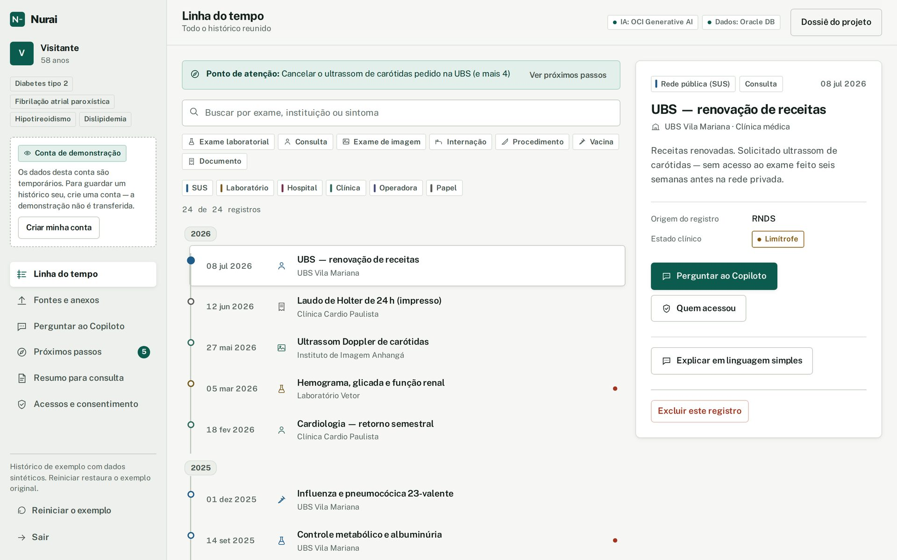
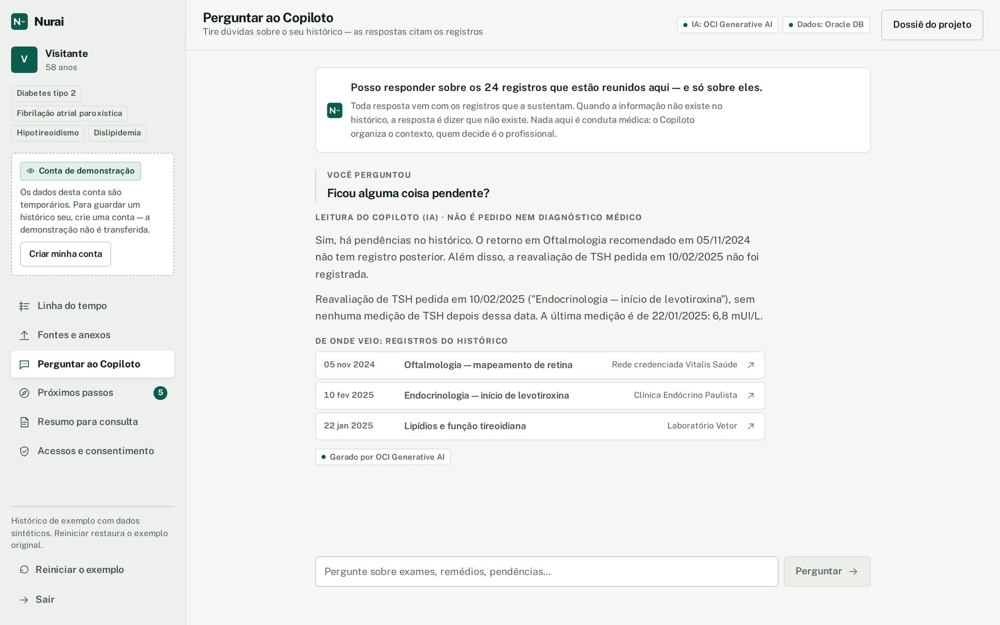
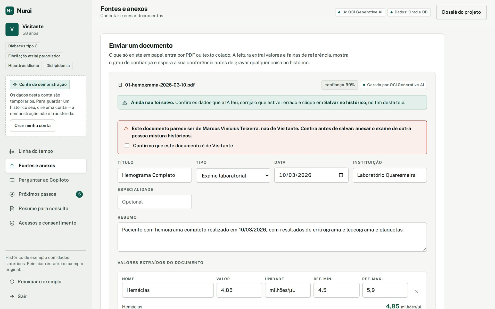
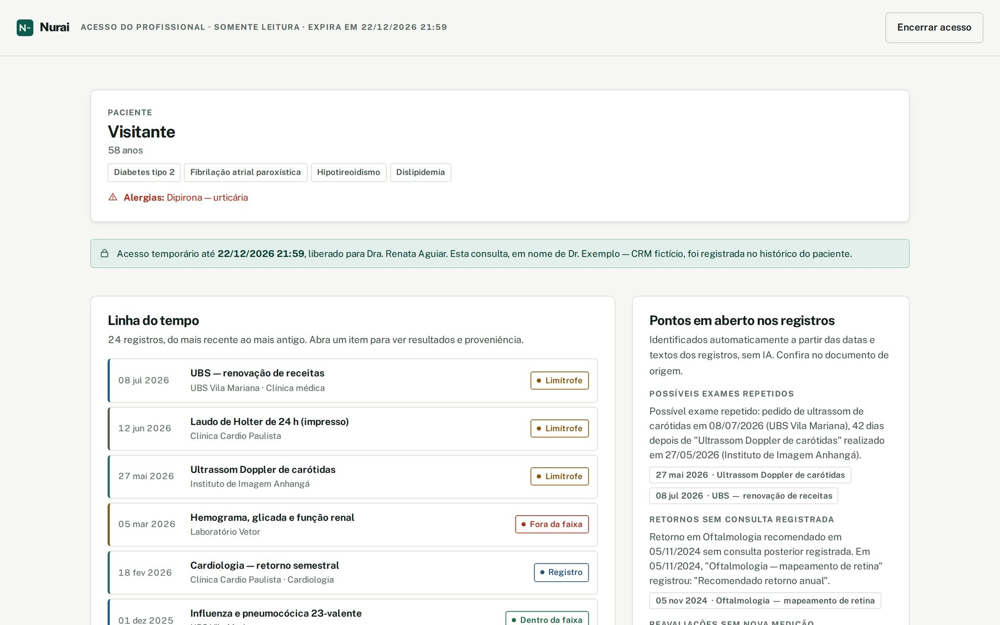

Challenge STO 2026 · FIAP · Fase 7 · Pitch final
O histórico de saúde que fica com você e chega pronto à consulta.
Para quem tem doença crônica e se trata em vários lugares: SUS, rede privada e papel numa linha do tempo, lida com IA da Oracle Cloud.
1 · Problema
dos adultos brasileiros têm ao menos uma doença crônica: cerca de 83 milhões de pessoas.
IBGE, Pesquisa Nacional de Saúde 2019 (159,1 milhões de adultos)
"Já levei um resultado antigo por engano e precisei pedir outro exame."Participante U1, 58 anos, hipertensão e diabetes
"Ela já repetiu um exame porque o resultado anterior não estava à mão."Participante U2, cuidador da mãe
"Já cheguei sem um exame porque não lembrava em qual laboratório tinha feito."Participante U3, 35 anos, hipertensão
2 · Solução
SUS, laboratórios, hospitais, clínicas, operadora e papel numa só linha do tempo, com a origem de cada registro.
PDF, texto e até documento escaneado viram dados estruturados. O paciente confere antes de salvar.
Exame repetido, retorno atrasado e reavaliação esquecida. O Copiloto responde citando o registro de onde veio cada frase.
Resumo de uma página e acesso temporário, somente leitura, para o médico abrir por um código.
O paciente é o dono do dado. Consentimento por instituição, revogação em um clique, registro de cada acesso e exportação do histórico a qualquer momento (LGPD).
3 · Demonstração do MVP

Linha do tempo: 24 registros de 6 tipos de fonte, com o ponto de atenção mais urgente no topo.

Copiloto: "Ficou alguma coisa pendente?" A resposta cita os registros e indica que é leitura da IA, não pedido médico.
3 · Demonstração do MVP

Anexar laudo: a IA lê os valores e as faixas de referência, avisa se o documento é de outra pessoa e espera a conferência.

Médico pelo código: somente leitura, expiração no topo e os pontos em aberto, como o ultrassom pedido 42 dias depois de já feito.
Validação com o público-alvo
tarefas concluídas (10 sem ajuda)
confiança média nas respostas da IA
usariam o app; citaram R$ 10 a R$ 20 por mês
ajustes feitos no app a partir dos testes
"Se eu identificar o exame, a data e a fonte em poucos segundos, já ajuda."
Usaria antes da consulta, com acesso rápido e consentido. Pediu a expiração visível (feito) e um comparativo de resultados (próxima fase).
4 · Mercado
IBGE PNS 2019 (52% de 159,1 mi). ANS 2025: 53 mi de beneficiários, cerca de 1 em cada 4 brasileiros.
Adultos de 45 a 70 anos com hipertensão ou diabetes, que consultam 2 ou mais especialistas, e os filhos que cuidam dos exames deles. Começo pela Grande São Paulo.
Nos testes, a participante de 58 anos só usaria "com ajuda da filha", e o cuidador foi quem mais se dispôs a pagar.
5 · Modelo de negócio
A Nurai não vende dado de saúde. O preço do Plus fica no meio da faixa citada nos testes (R$ 10 a R$ 20), e o plano gratuito tira a barreira de entrada.
6 · Tecnologia e integração com a Oracle
React 19 e TypeScript, web responsiva para computador e celular, publicada na Vercel.
Hono (Node) como função na Vercel: autenticação, consentimento, registro de acessos e regras de pendência.
Contas, histórico, permissões e registro de acessos.
Llama 3.3 70B em São Paulo: leitura de laudos, copiloto com citação, resumo e pendências.
OCR para PDF escaneado, quando o texto não é selecionável.
Toda frase da IA precisa citar um registro que existe; citação inventada é descartada. Sem credenciais, o mesmo sistema roda localmente com banco em memória e IA simulada.
7 · Diferencial competitivo
| Alternativa | Junta público, privado e papel | Lê documento com IA | Aponta exame repetido | Prepara a consulta |
|---|---|---|---|---|
| Pasta, WhatsApp, e-mail | parcial | não | não | não |
| App do laboratório | só aquele laboratório | não | não | não |
| App da operadora | só a própria rede | não | não | parcial |
| Meu SUS Digital | registros da rede nacional | não | não | não |
| Nurai | sim | sim, com conferência | sim | sim, com acesso temporário |
Centrada no paciente, não na instituição. IA sobre o histórico reunido, sempre com a fonte. E o médico como aliado, não como alvo.
8 · Estratégia de crescimento
9 · Projeções
Receita total
| 2027 | 2028 | 2029 | |
|---|---|---|---|
| Usuários ativos | 8 mil | 40 mil | 150 mil |
| Assinantes Plus | 320 | 2.400 | 10.500 |
| Vidas B2B2C (média) | 1 mil | 15 mil | 60 mil |
| Margem de contribuição | 53% | 65% | 66% |
| Custos fixos | R$ 420 mil | R$ 1,15 mi | R$ 2,60 mi |
| Resultado do ano | −R$ 379 mil | −R$ 520 mil | +R$ 76 mil |
Premissas: conversão de 4% a 7% (típica de freemium, ainda não medida), preço dos testes, custo de IA estimado pela equipe. Projeção para orientar decisões, não previsão.
10 · Time
Experimente agora: nurai-one.vercel.app
Clique em "Abrir a demonstração". Paciente e instituições são fictícios. Não é dispositivo médico.